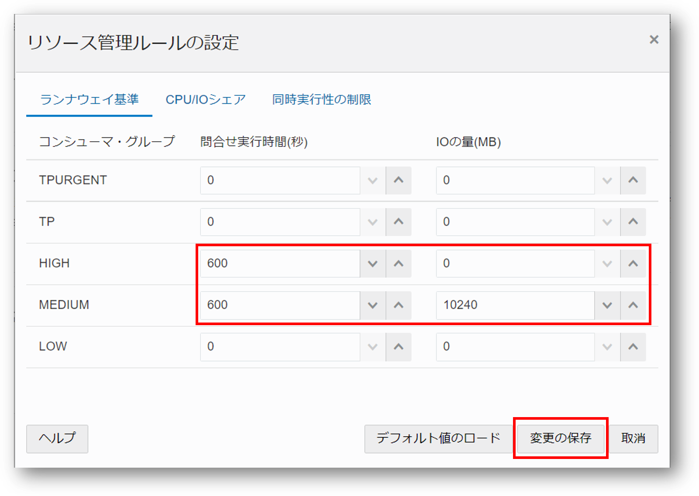

Autonomous Database では、事前に定義済の接続サービスが用意されています。 本章では、接続サービスの概要をご紹介します。
所要時間 : 約10分
前提条件 :
- ADBインスタンスが構成済みであること
※ADBインタンスを作成方法については、本ハンズオンガイドの 101:ADBインスタンスを作成してみよう を参照ください。
目次：
- 1. 接続サービスとは？
- 2. Database ActionsのResource Managerの設定画面にアクセスしよう
- 3. CPU/IOの優先度の変更しよう
- 4. 処理時間/利用IOの上限を設定しよう
- 5. 同時実行セッション数の制限が変更できることを確認しよう
1. 接続サービスとは？
接続サービスの選択
インスタンスに接続する際、Autonomous Databaseはアプリケーションの特性に応じて適切な「接続サービス」を選択する必要があります。
この「接続サービス」は、パラレル実行・同時実行セッション数・リソース割り当てなどの制御について事前定義されたもので、ユーザーは接続サービスを選択するだけで、CPUの割当や並列処理をコントロールできます。
選択可能な接続サービスの種類は、次の通りです。
Autonomous Data Warehouse(ADW) では３種類、Autonomous Transaction Processing(ATP)では5種類あり、ワークロード適したものを選択します。
使い分けの指針、スタートポイント
代表的なワークロードを「OLTP系」と「バッチ系/DWH系」の２つのカテゴリに分類し、それぞれの処理の特性と適応する接続サービスについてまとめました。
OLTP系 |
バッチ系・DWH |
|
|---|---|---|
| 特徴 |
|
|
| 一般的なチューニング方針 |
|
|
| Autonomousにおける推奨 |
▲ 少ないリソースで処理させることで、より多くの処理をこなせるようになる |
▲ リソースを100%使い切ることで、全体の処理を早く終えることができる！ |
- OLTP系の処理
- 比較的軽いSQLを多くのユーザが同時に処理を実行するような場合、まずはTPをご利用ください。
- 比較的優先度が高く、また単一のCPUコアで処理するので、単体処理のリソース利用の極小化し、スループット（TPS:Transaction Per Sec）の向上が図れます。
- 一方で、手動でパラレル度を制御したい場合、もしくは最優先したい特別な処理の場合は、TPURGENTをご利用ください。
- その他、HIGH/MEDIUMは同時実行セッション数に制限があるため、OLTP系の処理には向きません。
- バッチ系/DWH系の処理
- 同時実行ユーザ数が少ない一方で、一本のSQLが重く長時間かかるSQLの場合は、まずはMEDIUMをご利用ください
- 単体のSQLに対して複数のCPUコアが割り当てられ、またキューイングも実装されているため効率よく処理でき、レスポンス（Elapsed Time）の向上が図れます。
- さらにリソースを多く割り当てて性能を向上したい場合は、HIGHをご利用ください。ただし、同時実行セッション数が3に制限されます。
- その他、管理操作等LOWをお使いください
以下では、接続サービス毎に設定可能な、CPU/IOの優先度(shares)の設定、処理時間/利用IO量の上限設定について確認します。
2. Database ActionsのResource Managerの設定画面にアクセスしよう
Database Actionsは、ADBにビルトインされているツールで、データベースオブジェクトの管理、SQLなど様々な操作を実行できるツールです。
その他にもADBのパフォーマンスの管理および監視も行えます。
管理面では、ウォレットのダウンロードや管理者パスワードの変更などができ、監視面ではADBのアクティビティやCPU使用率などを監視することができます。
その中の、管理機能の一つである「リソース管理ルールの設定」という項目では、リソースマネージャの設定変更を行うことができます。
本ページでは以下の3つの設定を変更・確認してみましょう。
- 長時間実行されるSQLや大量にIOを消費するSQLの自動切断設定（デフォルトは0で未設定）
- 接続サービス間の優先度の調整
- 同時実行セッション数の調整
まずは、設定変更を行うためDatabase Actionsにアクセスします。
-
Database Actionsをクリックします。
-
管理のリソース管理ルールの設定をクリックします。
3. CPU/IOシェアの変更しよう
CPU/IOのシェアとは、各接続サービス（コンシューマ・グループ）間でのCPU配分の相対的な優先度を示す値です。
1.でご紹介した、TPURGENT・TP・HIGH・MEDIUM・LOWの５つの接続サービスに、それぞれどのくらいのCPU/IOシェアを割り当てるか という比率を設定することができます。
尚、IOについてはCPUに比例する形で割り当てられます。
補足
割り当てる数値について、例を挙げながらご紹介します。
リソース管理ルールの設定にて、CPU/IOシェアの割当を右図のように設定したとします。
このような設定で、TPURGENTを使ったセッションと、LOWを使ったセッションの２つが同時に処理を要求した場合、全体のリソースをTPURGENT:LOW = 12:1でリソースを分け合う という形で処理されます。
-
CPU/IOシェアタブをクリックします。 -
デフォルトでは上限は設定されていません。適宜数値を変更して 変更を保存 をクリックしてください。
（ここでは例としてTPの優先度をデフォルトの8から10に変更しています)
4. 処理時間/利用IOの上限を設定しよう
ランナウェイ基準は、各接続グループに対し、 SQLの実行時間、IO量の上限 を設定する項目です。
上限を超えるクエリは強制キャンセルされますが、セッションは接続されたままとなります。
-
ランナウェイ基準タブをクリックします。 -
デフォルト設定を確認し、適宜数値を変更して 変更を保存 をクリックしてください。
（ここでは例としてHIGH,MEDIUMの処理時間上限を10分、MEDIUMのIO上限を10GBに設定しています）

5. 同時実行セッション数の制限が変更できることを確認しよう
同時実効性とは、複数のトランザクションを同時に処理するための機能のひとつです。
事前定義されたサービス名のコンシューマーグループは、さまざまなレベルのパフォーマンスと同時実行性を提供します。
事前定義されたサービスの1つを選択すると、ほとんどのアプリケーションで適切に機能する同時実行セッション数が提供されます。
しかし、デフォルトのサービスの1つを選択してもアプリケーションのパフォーマンスのニーズが満たされない場合は、MEDIUM サービスのみ同時実行性の制限を変更することができます。
同時実行制限を変更すると、OCPUの数と選択した同時実行制限に基づいて、 並列度（DOP） が再計算されます。
※ 並列度は、単一の処理に対応付けられるパラレル実行サーバーの数で表される値です。
ATPにおける各接続サービスのデフォルトの同時ステートメント数は、次の法則に従って定義されます。
データベースサービス名 |
同時実行性の制限値 |
|---|---|
| tpurgent | 300×OCPU数 |
| tp | 300×OCPU数 |
| high | 3 |
medium |
1 ~ 3×OCPU数 の間で調整可能 |
| low | 300×OCPU数 |
ただし、MEDIUMサービスにおける同時実行制限の変更は、2つ以上のOCPUを持つインスタンスでのみ許可されます。
サービスの同時実効性についての詳細はこちらを参照ください。
-
同時実効性の制限タブをクリックします。 -
MEDIUMの同時実効性の制限を変更します。 デフォルト設定を確認し、数値を変更できることをご確認ください。 変更の保存はせず、デフォルト値のままで結構です。

OCPU数を2に設定しているため、同時実効性の制限を 1 ~ 6の間で変更することができます。 なお、OCPU数はADBの実行中にも変更可能です。
以上で、この章の作業は終了です。
次の章にお進みください。